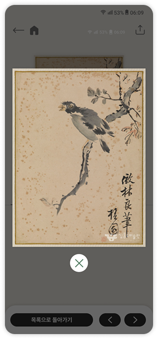

Kim Hong-Do
Art Museum
프로토타입보기
-
3 days

Figma

기여도 100%
Overview
Design Guide
조선 시대를 대표하는 화가 김홍도를 기념하는 미술관이 있다는 사실, 알고 계셨나요? 이와 관련된 앱도
존재하지만, 대중적인 인지도가 낮아 많은 사람들이 잘 알지 못해요. 그뿐만 아니라 앱을 직접 사용해보
니 전통적인 이미지에 치중되어 있어, 사용자 친화성이 부족하다는 인상을 받았어요.
그래서 조금 더 친화적이고 직관적인 방식으로 즐길 수 있는 앱으로 개선해야겠다고 결심했어요.
Color
하얀 바탕 위에 먹으로 표현한 짙은 검은색
을 주색상으로 사용하고, 자연 친화적인 보
조 색상을 더해 전통적인 미감과 현대적인
감각을 조화롭게 담아냈어요.
을 주색상으로 사용하고, 자연 친화적인 보
조 색상을 더해 전통적인 미감과 현대적인
감각을 조화롭게 담아냈어요.
-
#FFFFFF
RGB
255
255
255 -
#171717
RGB
23
23
23 -
#4B785C
RGB
75
120
92 -
#684733
RGB
104
71
51
Typography
제목/본문
Pretendard
Pretendard 22px
Pretendard 16px
포인트
Moneygraphy
Moneygraphy 22px
미술관의 운영시간을 제일 상단에 배치해
쉽게 정보를 찾을 수 있게 했어요.
김홍도 화가에 대한 정보를 메인에 배치함으로써,
인물에 대한 정보를 더 담아내고 관심을 유도했어요.
직접 방문한 사용자를 위한 메뉴를 한데 모아
손쉽게 이용이 가능하도록 만들었어요.
‘오늘의 추천 작품’을 통해 소장품 메뉴에 대
한 접근성을 높이고, 사용자가 작품에 더욱
관심을 가질 수 있도록 했어요.
- 